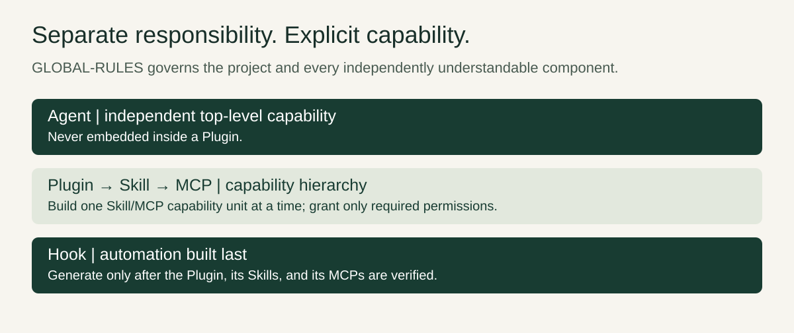
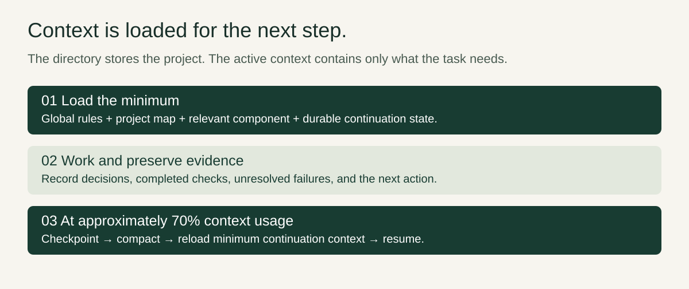
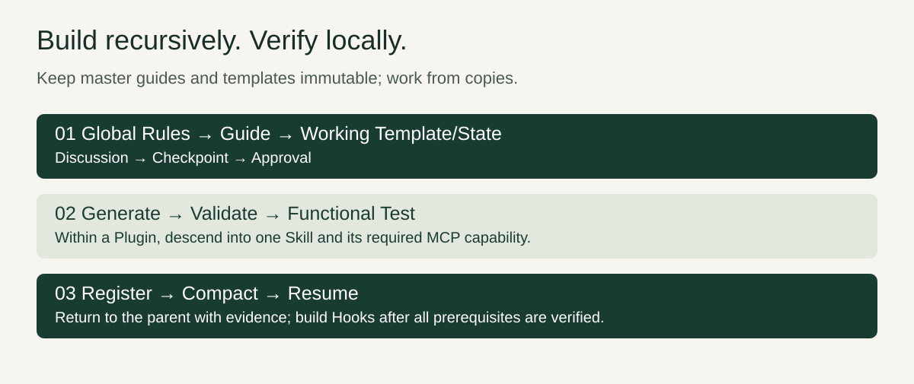
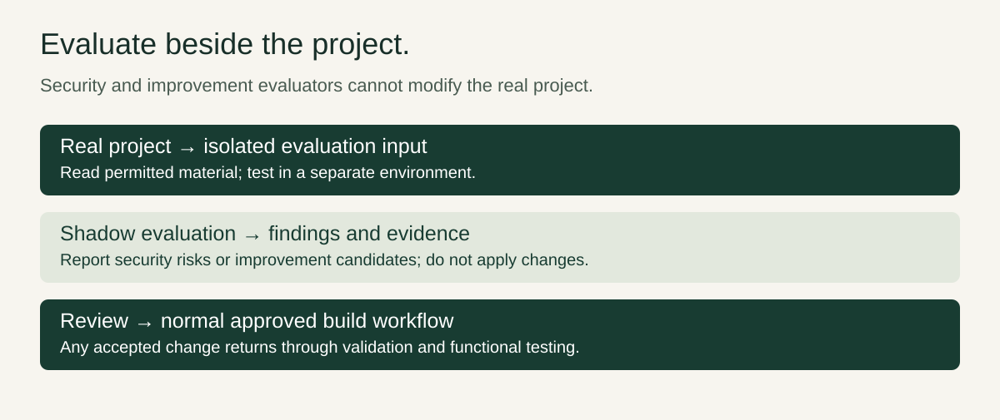

A framework for continuity and control
The AI-Native Development Framework organises AI-assisted development around explicit rules, independently understandable components, and durable state. Its purpose is to make work resumable and reviewable even when a conversation becomes long, a capability grows, or a test fails.
The architecture defines responsibilities and boundaries. It does not mandate a vendor, model, hosting service, or catalogue of MCP tools. A project chooses implementations that satisfy its actual requirements.
One project map, independently understandable components
GLOBAL-RULES.md has the highest precedence within the framework. Component instructions, Builder guides, and working state must remain consistent with it. The project map, PROJECT.md, stays minimal: it helps locate components and relevant context without becoming a complete copy of the project.
Each component must make sense on its own. A reader should be able to identify its purpose, boundaries, relevant instructions, and continuation state without loading unrelated components. Physical folder organisation helps navigation, but directory structure does not equal context structure.
PLAN.md belongs to design and build work. It is not automatically loaded into production runtime context. Newer locked Builder decisions override older placeholders, including any older suggestion that Agents belong inside Plugins.
Agent, Plugin, Skill, MCP, and Hook
An Agent is an independent top-level capability with its own responsibility. A Plugin is a separate top-level capability concept. Agents are never embedded inside Plugins; using a capability does not change this ownership boundary.
Within Plugin construction, the hierarchy is Plugin → Skill → MCP. A Skill supplies the instructions needed for a particular capability; its MCP integration exposes the required actions. Existing Skills serve as reference material. Plugin-specific Skills are trimmed to the actual requirements rather than copied wholesale.
MCP permissions follow least privilege: expose only the actions and access needed by the capability. A Hook adds automation around verified behaviour. Hooks are generated last, only after the Plugin, Skills, and MCPs have been verified.

Lazy context loading and the 70% checkpoint
At runtime, load relevant information when it is needed. Start with the governing rules, minimal project map, and the component and state relevant to the current step. Do not preload every guide, Skill, historical discussion, or design plan merely because it exists in the repository.
At approximately 70% context usage, write a checkpoint, compact, and reload the minimum context required to continue. This is a continuation discipline, not a claim that every runtime measures context in exactly the same way. Avoid waiting until essential decisions can no longer be preserved.
A checkpoint should be small but sufficient: what was decided, what was completed, evidence for checks, unresolved issues, and the precise next step. Durable state lives beyond the current conversational window. It must distinguish confirmed results from assumptions and preserve failure information through compaction.

The Builder lifecycle: working copies, approval, and evidence
The locked sequence is Global Rules → Guide → Working Template/State → Discussion → Checkpoint → Approval → Generate → Validate → Functional Test → Register → Compact → Resume.
Master GUIDE.md, templates, and STATE.template.yaml remain read-only. Create working copies for the current build and keep evolving decisions and execution state there. Discussion resolves scope; the checkpoint makes that scope reviewable; approval precedes generation.
Validation checks conformance to the agreed requirements and architecture. A functional test checks whether the generated capability actually works. Registration follows those checks and must not imply success when evidence is absent. After compaction, resume from the recorded position rather than reconstructing progress from memory.

Build one capability unit at a time
A Plugin can require several Skills, each with narrowly scoped MCP actions. Build recursively: enter the Plugin scope, select one Skill, resolve its required MCP capability, validate and functionally test that unit, then return to the parent scope with evidence before proceeding.
For example, an illustrative document-reading Plugin might first build a Skill that reads a selected document through a read-only MCP action. A second capability would be handled separately. Reading one document is not justification for broad write or account-management permissions. This example introduces no required service or tool.
The parent Plugin still needs verification once its units are assembled. Only when the Plugin, Skills, and MCPs are verified should Hook generation begin. Automation should depend on demonstrated behaviour, not untested assumptions.
Failures remain visible; retries need a reason
Failed or uncertain work is never marked successful. If a check fails, preserve the failure, inspect the evidence, and identify what would make another attempt informative. Do not rerun the same action blindly or erase an unresolved result from continuation state.
Repeated unresolved failures stop automation and escalate to manual intervention. The architecture does not establish a universal retry count here; it establishes the boundary that repeated failure cannot become an endless automated loop. A useful escalation includes the attempted action, observed result, relevant evidence, and decision needed to continue.
Secrets stay outside Markdown, templates, checkpoints, and source control. Preserve references to the required secret mechanism when needed, without copying credential values into durable state.
Security and improvement evaluation in isolation
Security and improvement evaluators can read, test, and report. They cannot modify the real project. Their work takes place in a shadow evaluation environment so that a proposed improvement or security experiment does not silently become a production change.
Report the finding, evidence, limitations, and proposed response. If a change is accepted, carry it through the normal approved build workflow with validation and functional testing. The evaluator’s report is an input to a decision, not permission to bypass the Builder lifecycle.

Putting the boundaries to work
Begin a task by finding the global rules and relevant component, then load only the material needed for the next step. Keep working state current, construct one capability at a time, and preserve evidence before proceeding. At the context checkpoint, save a minimal continuation record and resume with those same boundaries intact.
The result is a framework in which responsibilities stay clear as projects grow: independent Agents, scoped Plugins, trimmed Skills, least-privilege MCPs, and Hooks added after verification. Durable state connects the work across sessions without turning every file into permanent runtime context.
For related background, read CloudX Context Builder and the local AI coding workspace article. These are separate projects, not additional requirements of this framework.